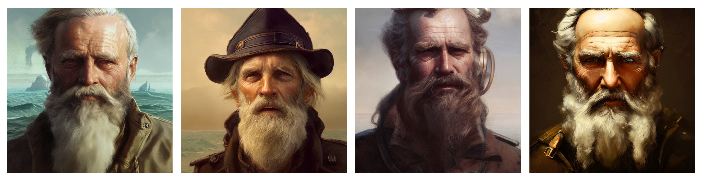
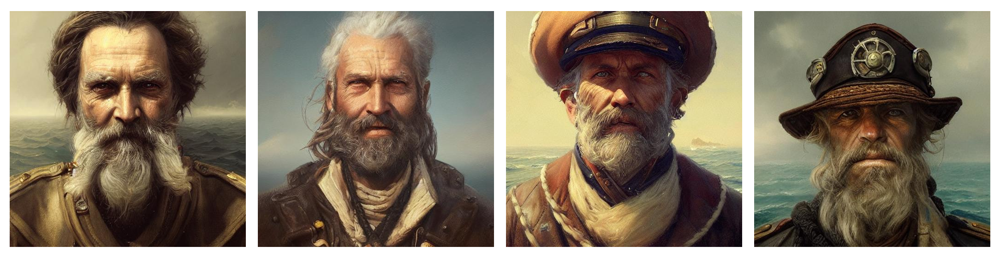
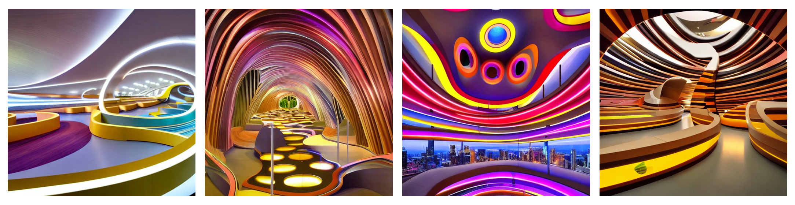
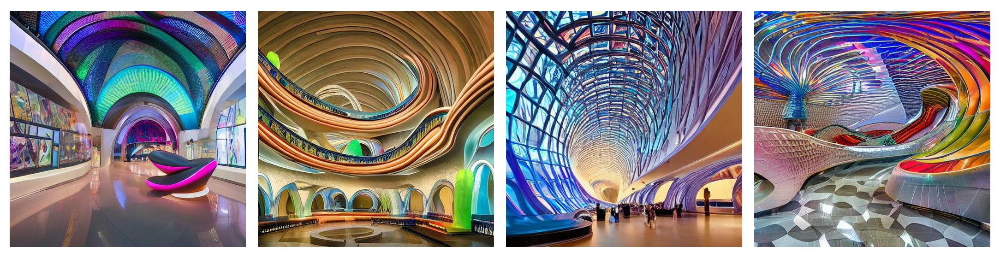
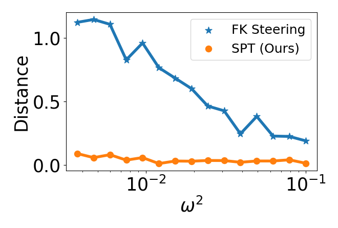

Goal: given a pretrained generative model and a reward function on its outputs, draw samples concentrated on high-reward outputs — without retraining or fine-tuning the generator.
Standard generative models produce samples by transporting noise through a fixed drift to data. But what if we want to steer generation toward a specific target — high-reward outputs, a constrained region, a desired class — without retraining the model?
We do source steering: instead of modifying the generator, we re-weight the noise inputs. We define a reward consistent with the steering target on the output space, then sample source latents in proportion to that reward. The key step is that evaluating the reward at any candidate source requires running the generator forward and scoring the resulting output distribution.
This reward landscape over the source is rugged and high-dimensional, so we use Parallel Tempering MCMC: a ladder of replicas at increasing temperatures explores the source space in parallel and swaps states across temperatures, letting cold chains escape local modes through their hotter neighbors.
Parallel Tempering: replicas at increasing temperatures explore the rugged reward landscape over the source; cold chains lock into modes while hot chains tunnel between them, with periodic swaps mixing the ladder.
Let $G_\theta : \epsilon \mapsto x$ be the pretrained generator with source prior $\epsilon \sim \mathcal{N}(0, I)$, and let $r(x)$ be a reward consistent with the steering target. The induced reward on the source is
which requires running the generator forward at every candidate $\epsilon$. We sample the steered source distribution
using Parallel Tempering MCMC. A ladder of replicas $\epsilon^{(1)}, \dots, \epsilon^{(K)}$ targets tempered densities $\pi_k(\epsilon) \propto p(\epsilon)\, \exp(\beta_k R(\epsilon))$ with inverse temperatures $\beta_1 > \cdots > \beta_K$. Adjacent replicas propose swaps accepted with
Hot chains tunnel through low-reward barriers; cold chains exploit high-reward modes. Pushing the cold chain through $G_\theta$ yields steered samples without ever retraining the generator.
Steering Stable Diffusion v1.4 with a human-preference reward. For each prompt, we compare unsteered base samples (left) against samples drawn from the steered source distribution via SPT (right). SPT concentrates mass on high-reward outputs without retraining the generator.




